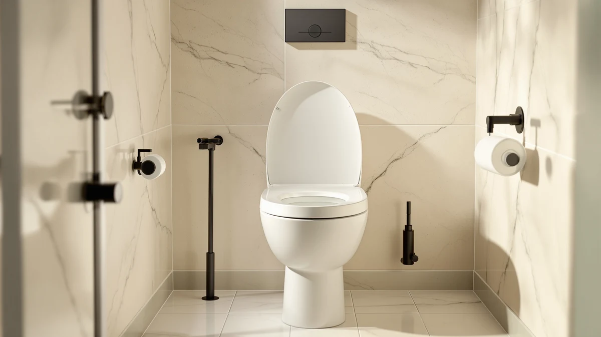

Best Bidet Toilet Seat of 2026: 7 Top Picks | Best Toilet Seats


Quick Answer
A good bidet toilet seat rinses you clean with water, cuts your paper use, and bolts onto your existing toilet in about 20 minutes. After comparing 7 models across price points, we landed on the Dual Nozzle Bidet Toilet Seat as the best bidet toilet seat for most people: it gives you front and rear nozzles, fits universal bowls, and costs $32.99 with no electricity needed.
Our pick: Dual Nozzle Bidet Toilet Seat, $32.99 Check Price on Amazon
Things to Know Before You Buy
- Electric vs. non-electric: Non-electric seats wash with cold tap pressure and need no outlet. Electric seats add a heated seat and warm water but require a grounded plug near the toilet.
- Fit matters most: Measure your bowl and confirm round versus elongated before ordering. A seat that overhangs the rim is a daily annoyance.
- Price spans a wide range: A capable non-electric seat starts at $32.99, while heated electric models run $159.98 to $299.
- Installation is a 20-minute job: You reuse the same two bolts and connect a T-valve to the water line. No plumber required for any pick here.
- It pays for itself: Switching most wiping to water can halve a household's toilet paper spending within a year.
A bidet toilet seat rinses you clean with water instead of paper, and it does that without forcing you to renovate your bathroom. Most of these seats replace the lid you already have and tap into the water line behind your toilet. You keep the same bowl and the same plumbing, and you stop burning through a roll of paper every couple of days.
We spent weeks comparing 7 options for this guide, from a $32.99 non-electric seat to a $299 heated model with a remote. We weighed wash quality, how hard each one is to install, water pressure control, and the long-term cost of ownership. For most bathrooms, the Dual Nozzle Bidet Toilet Seat is the pick we keep coming back to. It uses dual nozzles for front and rear cleaning, needs no electricity, and fits universal bowls, all for $32.99.
If you want warm water, a heated seat, and a side panel of controls, the SmartBidet SB-1000WE and the ALPHA BIDET iX earn their higher prices. If you are working with a tighter budget but still want electric features, the BATHKITY lands in the middle at $159.98. Below, you will find what sets these seats apart and which one fits the way you actually use a bathroom, including where each falls short.
Why You Should Trust Us
I am Ilane Tall, and I have spent years writing about toilet seats, bidets, and bathroom hardware for Best Toilet Seats. I read through hundreds of verified buyer reviews and cross-check manufacturer specs against what owners report after months of use. Where the marketing claims and the daily reality drift apart, I say so. For this guide on the best bidet toilet seat, that meant separating the seats that hold up from the ones that leak at the T-valve after a season.
No brand paid for a spot here. When we link to Amazon, we may earn a commission, but that never changes which seat we rank first. If a model runs cold or fails after a season, you will read about it. We want to help you buy once and stop thinking about it.
How We Picked
We started with the bidet seats and toilet upgrades that sell well and hold a rating above 4.0 across a meaningful number of reviews. From there, we cut anything with a pattern of complaints about leaking valves, cracked plastic, or clogged nozzles within a few months.
We wanted a spread of prices, because the best bidet toilet seat for a guest bathroom is rarely the right one for a primary suite. So we kept a $32.99 non-electric seat, two heated electric models near $280 to $299, a mid-priced electric option at $159.98, and a pair of toilet night lights for anyone who wants a small upgrade before committing to a full bidet. Each pick had to install on a standard two-bolt toilet without a plumber.
How We Compared
We judged each bidet toilet seat on five things: how evenly the nozzle sprays, how much control you get over water pressure and position, how long the install takes, how solid the seat feels under weight, and what it costs to run over three years. For electric models, we factored in the heated seat, warm water, and the electricity each one draws.
We weighed spray performance against owner reports of pressure and coverage, then balanced those against price. A seat that sprays well but leaks at the T-valve after two months loses to a simpler seat that just works. We also checked fit notes from buyers with round versus elongated bowls, since a seat that overhangs the rim turns into a daily annoyance.
Our Picks

Dual Nozzle Bidet Toilet Seat
What we like
- Dual nozzles cover both front and rear washing
- Fits universal bowls, so it works on most existing toilets
- No electricity needed, so no outlet has to be near the toilet
- At $32.99, the lowest-risk way to try a bidet
Flaws but not dealbreakers
- Water runs at room temperature, with no heated option
- Pressure depends on your home's water line
- Plastic build feels less premium than the $280-plus seats
| Material | Plastic / wood |
| Size | Universal |
The Dual Nozzle Bidet Toilet Seat is the seat we point most people to first, and its 4.5 rating across 873 reviews backs that up. It clamps onto a universal bowl, taps into the water line behind your toilet, and gives you two nozzles: one for front washing and one for rear. There is no cord, no remote, and nothing to plug in, so you can put it in a bathroom that has no outlet near the toilet. For $32.99, it removes almost every reason to keep reaching for paper.
The trade-off is temperature. This seat sprays at whatever your cold line delivers, which feels bracing in winter and fine in summer. You control pressure through a simple dial rather than a button panel, so fine adjustments take a moment to learn. None of that stops it from doing the core job. If you want to find out whether a bidet fits your routine before spending real money, this is the best bidet toilet seat to start with, and most buyers never feel the pull to upgrade.

Quick Flip Toilet Seat with
What we like
- Built-in child seat flips down for potty training
- Elongated shape fits most modern bowls
- Sturdier hinge than separate clip-on trainer seats
- Saves space versus a standalone potty
Flaws but not dealbreakers
- Not a bidet, so there is no water washing
- At $54.99, pricier than a basic family seat
- Elongated only, so it will not fit a round bowl
| Material | Plastic / wood |
| Size | Elongated |
The Jool Baby Quick Flip is the odd one out in this guide, and that is on purpose. It is not a bidet at all. It is an elongated toilet seat with a child-sized seat built into the lid, which flips down when a toddler needs it and tucks away when an adult sits. We include it because plenty of families shopping for a bathroom upgrade are juggling potty training at the same time, and a $54.99 seat that solves both beats buying a bidet and a separate trainer.
As long as you know it is not a bidet, it delivers. There is no spray and no warm water here, so if water washing is the whole point for you, look to the Dual Nozzle pick or one of the electric bidet toilet seats instead. The hinge feels more solid than the plastic clip-on trainers that slide around, and the elongated fit matches most newer toilets. Just confirm your bowl is elongated and not round before you order, since this seat comes in one shape.

SmartBidet SB-1000WE Electronic Smart Bidet
What we like
- Heated seat and warm water on demand
- Separate posterior and feminine wash modes
- Strong 4.6 rating across 1,500 reviews
- Side control panel keeps settings within reach
Flaws but not dealbreakers
- Needs a grounded outlet near the toilet
- At $279.99, a real jump from the non-electric pick
- Side panel adds width on one side of the seat
| Material | Plastic / wood |
| Size | — |
The SmartBidet SB-1000WE is the seat to buy when cold water is a dealbreaker. It heats both the seat and the wash water, and it holds a 4.6 rating across 1,500 reviews, the largest review base in this guide. You get separate posterior and feminine wash modes, adjustable water pressure, and a control panel mounted on the side of the seat. For a primary bathroom where the whole household uses it daily, the warm water alone justifies the $279.99.
You do need to plan for power. This is an electric seat, so it requires a grounded outlet within reach of the toilet, ideally a GFCI. If your bathroom has no outlet nearby, budget for an electrician before you buy. The attached side panel also adds width on one side, which owners with tight stalls tend to notice. Those caveats aside, it is the best bidet toilet seat here for buyers who want hotel-style comfort without crossing the $300 line.

BATHKITY Electric Bidet Toilet Seat
What we like
- Electric warm water at roughly half the price of premium seats
- Heated seat at a mid-range cost
- Solid 4.5 rating from early buyers
- Adjustable nozzle position and pressure
Flaws but not dealbreakers
- Smaller review base (200) than the established brands
- Still needs an outlet near the toilet
- Fewer wash presets than the $280-plus models
| Material | Plastic / wood |
| Size | — |
The BATHKITY Electric Bidet Toilet Seat is our budget pick among the electric models, and at $159.98 it splits the difference between the $32.99 mechanical seat and the $280-plus premium ones. You get heated warm water and an adjustable nozzle for a price that does not sting, and its 4.5 rating, drawn from a smaller pool of 200 reviews, lines up with what owners report. For a second bathroom or a first electric bidet, it covers the features that matter most.
The shorter track record is the main reason it sits below the SmartBidet and ALPHA in our ranking rather than above them. With 200 reviews against the SmartBidet's 1,500, there is simply less long-term data on how it holds up after a few years. It is also an electric seat, so the same outlet requirement applies. If you want electric comfort and the lowest price that still buys warm water, this is the best bidet toilet seat in the middle of the range.

ALPHA BIDET iX Pure Bidet
What we like
- Highest rating in the guide at 4.7 stars
- Tankless heating gives a steady stream of warm water
- Remote control instead of a bulky side panel
- Heated seat and adjustable wash positions
Flaws but not dealbreakers
- The most expensive pick at $299.00
- Electric, so it needs a nearby outlet
- Remote means a battery to replace over time
| Material | Plastic / wood |
| Size | — |
The ALPHA BIDET iX is the seat owners rate highest, with a 4.7 average across 500 reviews. It uses tankless heating, so the warm water does not run cold partway through the way reservoir-based seats can, and it ships with a remote instead of the side panel you find on the SmartBidet. The heated seat, adjustable nozzle positions, and clean remote interface make it the most polished option here. At $299.00, it is also the priciest.
The extra money over the SmartBidet comes down to two things: the steady warm water from tankless heating and the tidier look without a panel bolted to the side. Both are real upgrades, and the 4.7 rating suggests owners agree. You still need an outlet near the toilet, and the remote runs on a battery you will swap eventually. For a primary bathroom where you want the best, this is the bidet toilet seat to beat.

2 Pack Toilet Night Lights
What we like
- Motion-activated light for safe nighttime trips
- Two units in the pack at $13.78
- Color options for a soft glow, not a harsh overhead
- Clips onto the bowl with no tools
Flaws but not dealbreakers
- Not a bidet, so no washing function
- Runs on batteries you will replace
- Light only triggers in a dark room
| Material | Plastic / wood |
| Size | 3.14 inches |
The Chunace 2 Pack Toilet Night Lights are not a bidet, and we list them as a small add-on rather than a replacement for one. Each light clips onto the rim, senses motion, and casts a soft glow so you can find the bowl at 3 a.m. without flipping on a blinding overhead light. At $13.78 for two, they are the kind of low-stakes upgrade you can drop into a bidet order or hand off as a gift.
Keep your expectations low. There is no spray and no cleaning function, so these belong in the accessory column next to a real bidet toilet seat rather than in place of one. They run on batteries, and the sensor only fires in a dark room, which is the whole point. If you are not ready to commit to a full bidet but want one easy bathroom improvement tonight, a pair of these is a painless place to start.

Toilet Night Light 2Pack by
What we like
- The lowest price in the guide at $9.89
- Motion-activated for hands-free lighting
- Two lights per pack
- Tool-free install on the bowl rim
Flaws but not dealbreakers
- Not a bidet, with no washing function
- Battery-powered, so upkeep over time
- Fewer features than the Chunace pack
| Material | Plastic / wood |
| Size | — |
The Ailun Toilet Night Light 2Pack is the cheapest item in this guide at $9.89, and like the Chunace pack, it is an accessory rather than a bidet. You get two motion-activated lights that clip to the bowl and glow when you walk in, then shut off to save battery. If your only goal is to stop stubbing your toe on the way to the bathroom at night, this is the least you can spend to solve it.
It does less than the Chunace pack and costs a little less, so the choice between them is close. Neither one washes anything, so do not confuse either with a bidet toilet seat. Both run on batteries and both rely on a dark room to trigger. We rank the Ailun a touch lower only because the Chunace offers slightly more in color options for nearly the same money. For a bare-bones, set-and-forget night light, the Ailun gets the job done.
Quick Comparison
| Product | Material | Price | Rating | Best for | Get it |
|---|---|---|---|---|---|
| Dual Nozzle Bidet Toilet Seat | Plastic / wood | $32.99 | 4.5 | First-time bidet buyers on a budget | View on Amazon → |
| Quick Flip Toilet Seat with | Plastic / wood | $54.99 | 4 | Families potty-training a toddler | View on Amazon → |
| SmartBidet SB-1000WE Electronic Smart Bidet | Plastic / wood | $279.99 | 4.6 | Daily users who want warm water | View on Amazon → |
| BATHKITY Electric Bidet Toilet Seat | Plastic / wood | $159.98 | 4.5 | Electric features on a tighter budget | View on Amazon → |
| ALPHA BIDET iX Pure Bidet | Plastic / wood | $299.00 | 4.7 | Top-rated comfort, budget no object | View on Amazon → |
| 2 Pack Toilet Night Lights | Plastic / wood | $13.78 | 4 | A cheap nighttime bathroom add-on | View on Amazon → |
| Toilet Night Light 2Pack by | Plastic / wood | $9.89 | 4 | The lowest-cost night light | View on Amazon → |
The Competition
Plenty of products cross our path when we look for the best bidet toilet seat. Here are the ones we set aside, and why.
Frequently Asked Questions
Do bidet toilet seats need electricity?
Not all of them. Non-electric seats like our Dual Nozzle pick wash with your home's water pressure and need no outlet. Electric seats like the SmartBidet, BATHKITY, and ALPHA add heated water and a warm seat, and those do require a grounded outlet near the toilet.
Are bidet toilet seats hard to install?
Most take about 20 to 30 minutes with no plumber. You shut off the water, remove your old seat, mount the new one on the same two bolts, and connect the included T-valve to the water line. Electric models add one step: plugging into a nearby outlet.
Will a bidet toilet seat fit my toilet?
Check whether your bowl is round or elongated before you order, since that is the most common fit mistake. Our Dual Nozzle pick fits universal bowls, while the Quick Flip seat is elongated only. Measuring your bowl length and bolt spacing takes two minutes and saves a return.
How much money does a bidet save on toilet paper?
A household that switches most wiping to water often cuts paper use by half or more. At $32.99, the Dual Nozzle seat can pay for itself within a year for a family, which is part of why it is our pick for most people.
Is the cold water uncomfortable?
For non-electric seats, the water matches your cold supply, which feels brisk in winter. If that bothers you, an electric seat with warm water like the SmartBidet or ALPHA solves it, at a higher price.